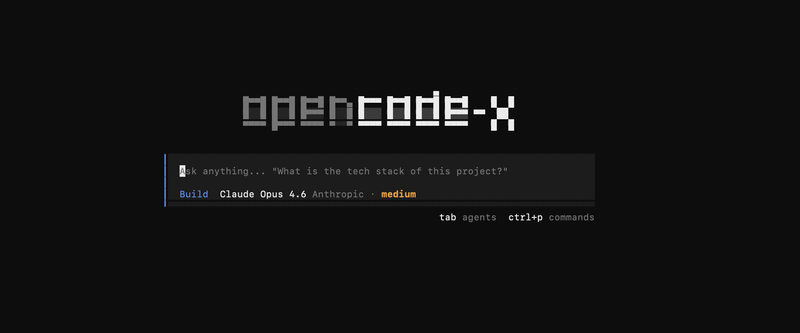

Set autonomous objectives. Agent self-steers until done.
Batch-parallel N subagents. Same template, different inputs.
Consolidate learnings. Extract skills. Never forget.
Parallel agents, zero conflicts. Patch-back on complete.
QuickJS sandbox. Multi-agent orchestration with replay.
Native Claude Code skills, agents & plugins. /btw, spinner verbs, usage tracking.
Cache stability. Tool output compression.